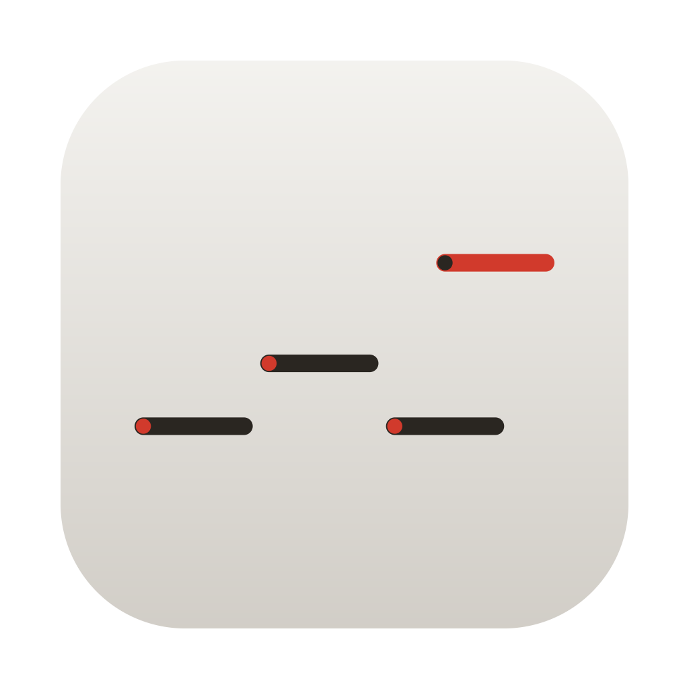

MutationStation · macOS app

MutationStation
Lock the notes that work, re-roll/mutate the rest, and discover acid lines you would not have usually written.
Give it a line and it mutates it across pitch, rhythm, accent, slide, octave and length into fresh variations you can audition, edit and drag straight into your DAW. Lock the notes that already work, Elektron-style, and re-roll everything else as often as you like. Or concentrate the mutation to a marked specific section of your sequence. Play notes in from a keyboard or a DAW track, pull a clip from Ableton Live and push it back out, and draw up to eight modulation lanes that stream live or bake into a Session clip as automation.